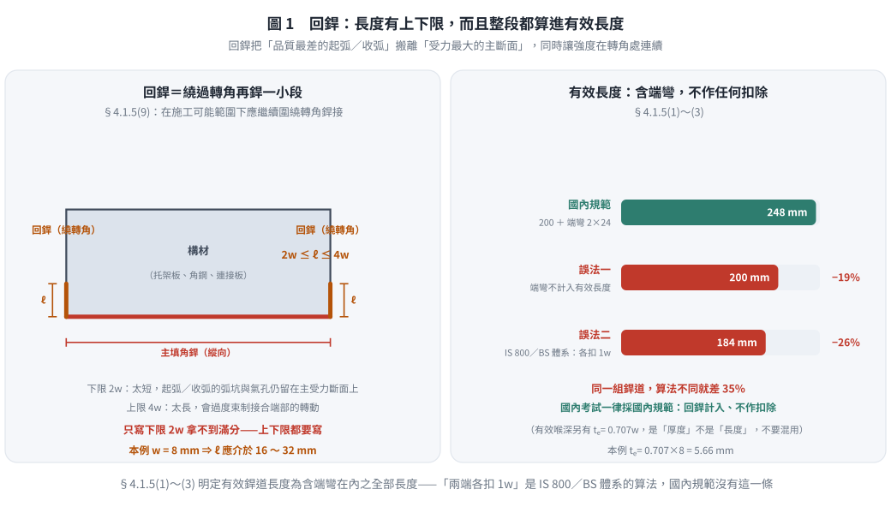
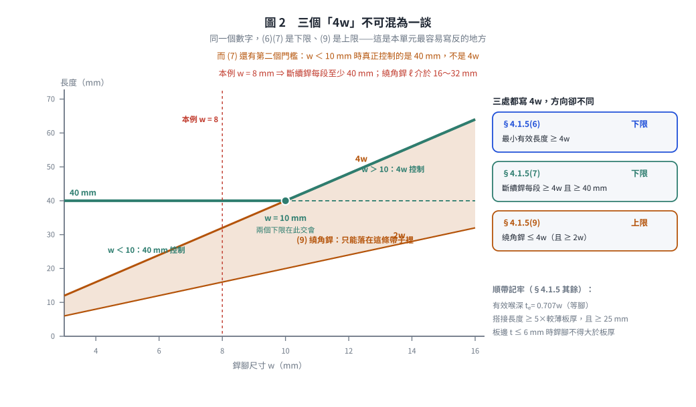
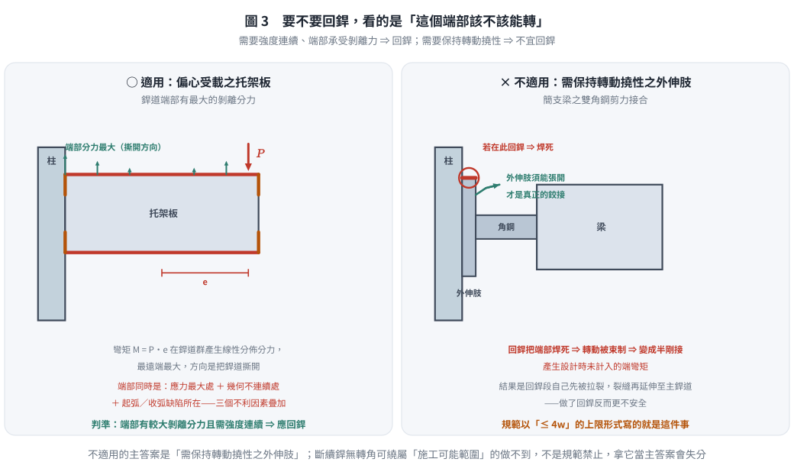

考題編號：SS-2016-2
主分類： SS-U2-3 設計規範對施工之要求
副分類： 無
設計法： 概念題
標籤： 施工規範 填角銲 回銲 繞角銲 轉角銲 end return 銲接細節 有效銲道長度 撓性接合
1. 原始題目重述 (Problem Restatement)
子問題：
- (一) 何謂回銲（圍繞轉角銲接，end return）？（10 分）
- (二) 請舉例說明何時適用回銲？何時不適用回銲？（各舉一例）（15 分）
（本題無附圖。）
命題出處： 鋼構造建築物鋼結構施工規範第四章「銲接施工」§4.1.5 第 9 項：
「接合部或構材側面填角銲或端部填角銲，分別在側或端部終止時，在施工可能範圍下，應繼續圍繞轉角銲接，其長度不得小於銲接尺寸之二倍，不得超過銲接尺寸之四倍。」
同節第 1～3 項另定義：填角銲之有效銲道長度為包括端彎（繞角銲）在內的全部填角銲道。
2. 考題核心精神與出題者意圖 (Core Concepts & Examiner's Intent)
核心觀念：回銲是「把銲道的起訖點搬離受力最大處」，但它同時會把接合變硬——所以規範同時訂了下限與上限。
多數考生只背得出「$\ge 2w$」，卻不知道規範同一句話裡還訂了 $\le 4w$。這個上限正是子題 (二)「何時不適用回銲」的答案來源：
- 下限 $2w$ 的用意：回銲太短，起弧／收弧的缺陷仍留在受力斷面上，等於沒繞
- 上限 $4w$ 的用意：回銲太長，會把原本應該可以轉動的接合端部焊死，使假設為鉸接（簡支）的接合實際承受彎矩，銲道端部反被拉裂
出題者測驗重點：
- 能寫出回銲的幾何定義與規範明訂的長度範圍（$2w \sim 4w$）
- 能從「銲道端部應力集中」的角度說明回銲的功用
- 能區分需要回銲（端部受剝離力、需要強度連續）與不適用回銲（接合需保持撓性、板件邊緣受計算拉應力、施工上無轉角可繞）的案例
3. 解題戰略地圖與陷阱分析 (Strategic Roadmap & Trap Analysis)
步驟規劃：
- 定義回銲（幾何 + 規範長度範圍 $2w \le \ell \le 4w$ + 目的）
- 舉正例：什麼接合形式適用 → 說明力學理由（端部剝離力、強度連續）
- 舉反例：什麼接合形式不適用 → 說明理由（撓性需求／邊緣拉應力／幾何不可行）
關鍵陷阱：
⚠️ 陷阱 1：只寫 $\ge 2w$，漏掉 $\le 4w$
規範 §4.1.5(9) 同一句訂了上下限：「不得小於銲接尺寸之二倍，不得超過銲接尺寸之四倍」。上限不只是數字，它是子題 (二) 的答案骨幹。⚠️ 陷阱 2：以為回銲長度不計入有效長度
恰恰相反。規範 §4.1.5 第 1～3 項明定：填角銲之有效銲道長度為「包括端彎（繞角銲）在內」的全部填角銲道。國內規範不做「兩端各扣 $1w$」之扣除——那是部分國外規範（如 IS／BS 體系採 實長 $-2s$）的作法，不可混用。⚠️ 陷阱 3：舉例只列場合、未說明力學原因
適用／不適用的理由須從「銲道端部應力分佈」或「接合的轉動需求」兩個角度解釋，才拿得到分。⚠️ 陷阱 4：混淆回銲與「環繞全周銲」（weld-all-around）
全周銲是沿整個接合輪廓繞一圈（銲接符號為圓圈）；回銲只在銲道端部繞轉角延伸 $2w\sim4w$。兩者目的與範圍完全不同。
3.5 變數層次分析（Variable Hierarchy Analysis）
複習提示：解題後，在每個卡住的知識點「卡關?」欄標記
⚠；第二次複習時只看有⚠的項目。
最終目標： 定義回銲（End Return）之幾何與規範明訂之長度上下限 → 舉例說明適用與不適用之場合及其力學原因
主要公式（規範明文，概念題）
回銲長度（施工規範 §4.1.5(9)）：
$$2w \;\le\; \ell_{\text{end return}} \;\le\; 4w \qquad (w = \text{填角銲腳尺寸})$$
有效銲道長度（§4.1.5(1)～(3)）：
$$L_{\text{eff}} = \text{全部填角銲道長度（\textbf{包括繞角銲在內}）}$$
依強度計算之最小有效長度（§4.1.5(6)）：
$$L_{\text{eff}} \;\ge\; 4w$$
斷續填角銲每段之有效長度（§4.1.5(7)）：
$$\ell_{\text{seg}} \;\ge\; 4w \quad\text{且}\quad \ell_{\text{seg}} \;\ge\; 40\ \text{mm}$$
搭接接頭最小搭接長度（§4.1.5(8)）：
$$L_{\text{lap}} \;\ge\; 5t_{\min} \quad\text{且}\quad L_{\text{lap}} \;\ge\; 25\ \text{mm}$$
L1：題目直接給定
| 符號 | 數值 | 說明 |
|---|---|---|
| 子問題(一) | 定義回銲（10 分） | 幾何描述 + 長度上下限 + 目的 |
| 子問題(二) | 適用／不適用各舉一例（15 分） | 需說明力學原因 |
L2：需知識點推導
Step 1：回銲定義（§4.1.5(9)）
| 項目 | 規定／來源 | 卡關? |
|---|---|---|
| 幾何 | 側面或端部填角銲在側／端終止時，繼續圍繞轉角銲接 | |
| 施作前提 | 「在施工可能範圍下」——無轉角可繞或無法施銲者不強制 | |
| 長度下限 | $\ell \ge 2w$ | |
| 長度上限 | $\ell \le 4w$ | |
| 是否計入有效長度 | 計入（§4.1.5(1)～(3)：有效銲道長度包括端彎在內） | |
| 目的 | 消除銲道端部（起弧／收弧、幾何不連續）之應力集中；提供抗剝離能力；使強度在轉角處連續 |
Step 2：適用回銲的場合
| 項目 | 內容 | 卡關? |
|---|---|---|
| 典型案例 | 托架板（Bracket Plate）／懸臂連接板以填角銲銲於柱翼板，承受偏心垂直載重 | |
| 力學原因 | 偏心彎矩使銲道端部產生最大的剝離（撕開）分力；若銲道在轉角突然終止，該處同時是應力尖峰與起弧／收弧缺陷所在，是裂縫萌生點 | |
| 回銲的作用 | 把起訖點搬離受力最大斷面，並以繞角段直接承擔端部剝離力；對反覆載重（疲勞）與地震尤其重要 |
Step 3：不適用（或須限制）回銲的場合
| 情形 | 規範／力學依據 | 卡關? |
|---|---|---|
| ① 接合之外伸肢需保持轉動撓性者 | 規範對回銲訂上限 $4w$，即為此而設。典型例：簡支梁之雙角鋼（或頂角鋼）剪力接合，角鋼外伸肢須能隨梁端轉動而張開；若在該肢頂端施作（或過長之）回銲，等於把接合焊死 ⇒ 假設為鉸接的接合實際產生端彎矩，回銲段首先被拉裂，反而降低安全 | |
| ② 搭接接頭中，一板件伸出另一板件邊緣且該邊緣受計算拉應力者 | 填角銲應在距該邊緣一段距離處終止，不得繞至該自由邊；繞至邊緣會在受拉自由邊製造缺口與殘留拉應力，成為斷裂起點 | |
| ③ 施工上無轉角可繞或無法施銲者 | 規範用語「在施工可能範圍下」已預留此彈性。例：斷續（間歇）填角銲各段位於腹板中間、無構材轉角可繞；或與其他構件干涉、銲槍無法伸入之位置 |
L3：深層知識（不懂就卡住）
| 知識點 | 說明 | 補強頁 | 卡關? |
|---|---|---|---|
| 銲道端部為何是應力集中處 | 銲道起弧／收弧品質最差（弧坑、氣孔），且幾何在此不連續，應力集中係數大，是疲勞裂縫的萌生點 | FILLET-WELD-DESIGN | |
| 為什麼下限訂 $2w$ | 繞角段至少要有兩倍銲腳長，才足以把起弧／收弧的不良段完全移出主受力斷面 | ||
| 為什麼上限訂 $4w$（本題關鍵） | 回銲越長，端部轉動束制越強。對「設計上假設為簡支（鉸接）」的接合，束制會誘發設計時未計入的端彎矩，銲道端部因而被拉裂——這是規範唯一以上限形式寫出的「不適用」情形 | ||
| 回銲計入有效長度（國內規範） | §4.1.5(1)～(3)：有效銲道長度為包括端彎在內的全部填角銲道。國內不採「兩端各扣 $1w$」之扣除（該作法屬 IS／BS 等其他規範體系） | FILLET-WELD-DESIGN | |
| $4w$ 的兩個身分不可混淆 | §4.1.5(6)：依強度計算之最小有效長度 $\ge 4w$（不足者該銲道不予採計）；§4.1.5(9)：繞角銲長度上限 $\le 4w$。兩者數字相同、意義完全不同 | ||
| 回銲 vs 環繞全周銲 | 全周銲沿整個接合輪廓繞一圈（符號為圓圈）；回銲只在端部繞轉角 $2w\sim4w$ |
4. 步驟化詳細計算過程 (Step-by-Step Detailed Calculation)
(一) 何謂回銲（End Return）（10 分）
1. 定義
回銲（End Return，又稱繞角銲、圍繞轉角銲接） 是指：當填角銲在構材的側面或端部終止時，不在轉角處突然停止，而是繼續圍繞該轉角銲接一小段，使銲道的起訖點離開主要受力斷面。
依鋼構造建築物鋼結構施工規範 §4.1.5 第 9 項：
「接合部或構材側面填角銲或端部填角銲，分別在側或端部終止時，在施工可能範圍下，應繼續圍繞轉角銲接，其長度不得小於銲接尺寸之二倍，不得超過銲接尺寸之四倍。」
2. 幾何說明
構材（如托架板、角鋼、連接板）
┌──────────────────────────────────────┐
│ │
└──────────────────────────────────────┘
↑ ↑
回銲（繞轉角） 回銲（繞轉角）
2w ≤ ℓ ≤ 4w 2w ≤ ℓ ≤ 4w
←──────── 主要填角銲（沿縱向）────────→
- 主銲道：沿接合受力方向（縱向）施銲
- 回銲段：在主銲道之一端或兩端，繞過構材轉角繼續延伸
3. 長度規定（本小題的核心得分點）
$$\boxed{\;2w \;\le\; \ell_{\text{end return}} \;\le\; 4w\;}\qquad (w = \text{填角銲腳尺寸})$$
| 界限 | 數值 | 訂定理由 |
|---|---|---|
| 下限 | $2w$ | 繞角段太短，起弧／收弧的弧坑與氣孔仍留在主受力斷面上，等於沒繞 |
| 上限 | $4w$ | 繞角段太長，會過度束制接合端部的轉動；對假設為鉸接的接合將誘發未計入的端彎矩，反而拉裂銲道 |
4. 是否計入有效長度
依規範 §4.1.5 第 1～3 項：填角銲之有效銲道長度為「包括端彎（繞角銲）在內」的全部填角銲道長度。
亦即國內規範將回銲段計入有效長度，且不作「兩端各扣 $1w$」的扣除。
⚠️ 須與同節第 6 項區分：依強度計算所得之填角銲最小有效長度不得小於 $4w$——這是「銲道太短就不予採計」的規定，與繞角銲的 $4w$ 上限數字相同、意義完全不同。

圖 1 回銲把品質最差的起弧／收弧搬離受力最大的主斷面，而且整段都算進有效長度。本圖攔的是只寫下限 $2w$ 而漏掉上限 $4w$，以及沿用 IS 800／BS 的「兩端各扣 $1w$」——國內規範 §4.1.5(1)～(3) 沒有這一條，兩種算法在本例差 $35\%$。
5. 目的（功能性說明）
- 把銲道的起訖點搬離受力最大處：起弧與收弧是銲道品質最差的兩段（弧坑、氣孔、未填滿），主銲道端部又正好是幾何不連續的應力集中區；回銲讓「最差的銲」落在「受力最小的地方」。
- 提供端部的抗剝離（peeling／tearing）能力：當接合承受使銲道端部脫開方向的力（如偏心彎矩造成的撕開趨勢）時，繞角段直接承擔該分力。
- 使強度在轉角處連續：避免板件轉角處成為未銲接的自由邊，降低疲勞裂縫萌生機率；繞角段並計入有效長度而貢獻強度。

圖 2 同一個 $4w$ 在三處條文裡方向不同：(6)(7) 是下限、(9) 是上限。本圖攔的是把三者寫反，也攔漏掉 (7) 的第二道門檻——$w < 10$ mm 時真正控制的是 $40$ mm 而不是 $4w$。
(二) 適用回銲 vs 不適用回銲（各舉一例）（15 分）
✅ 適用回銲：承受偏心載重之托架板（Bracket Plate）銲於柱翼板
情境： 一托架板（或懸臂連接板）以兩道縱向填角銲銲接於 H 型柱之翼板上，板端承受垂直集中載重 $P$，載重作用線距銲道群形心有偏心距 $e$。
力學分析：
- 銲道群同時承受直接剪力 $P$ 與偏心彎矩 $M = P\cdot e$
- 彎矩在銲道群產生線性分佈的分力，最遠端（銲道端部）分力最大，且方向為使銲道撕開（剝離）
- 若填角銲在托架板端部突然終止，該端點同時是：① 應力最大處 ② 幾何不連續處 ③ 起弧／收弧缺陷所在 ⇒ 三個不利因素疊加，是最典型的起裂位置
回銲的作用：
- 在銲道端部繞過板緣繼續延伸 $2w \sim 4w$
- 端部的剝離分力由繞角段承擔，應力尖峰被分散
- 起弧／收弧的缺陷段移出主受力斷面
- 繞角段並計入有效長度，直接提升接合強度
$$\text{判斷準則：} \quad \text{銲道端部存在較大的剝離（垂直於銲道面）分力，且需要強度連續時} \Rightarrow \text{應施作回銲}$$
其他適用例： 角鋼單邊銲於節點板端部、承受反覆（疲勞）或地震載重之懸臂接合、受端彎矩之連接板。
❌ 不適用回銲：需保持轉動撓性之接合外伸肢——簡支梁之雙角鋼（或頂角鋼）剪力接合
情境： 一簡支梁以雙角鋼剪力接合連於柱翼板：角鋼的一肢銲（或鎖）於梁腹板，另一肢（外伸肢）連於柱面。設計上此接合假設為鉸接，只傳遞剪力、不傳遞彎矩。
為何不適用（或必須嚴格限制）回銲：
- 接合必須能轉動。 梁受載變形時梁端會轉動，角鋼外伸肢須能隨之張開變形，才能實現「鉸接」的假設。
- 回銲會把端部焊死。 若在外伸肢的頂端施作回銲（或回銲過長），端部轉動被束制，接合實際上變成半剛接，產生設計時未計入的端彎矩。
- 後果是回銲段自己先破壞。 該端彎矩使銲道端部承受集中的拉力，最先被拉裂；裂縫再往主銲道延伸，接合整體失效——做了回銲反而更不安全。
- 規範以「上限」的形式寫出這件事。 §4.1.5(9) 訂繞角銲長度不得超過銲接尺寸之四倍，正是為了限制此類束制效應。
$$\text{判斷準則：} \quad \text{接合之外伸肢需要保持轉動撓性（設計上假設為鉸接）時} \Rightarrow \text{不宜施作回銲，必要時長度須嚴格受限}$$

圖 3 要不要回銲，看的是這個端部該不該能轉：需要強度連續、端部承受剝離力就回銲，需要保持轉動撓性就不宜。本圖攔的是把「不適用」的主答案寫成斷續銲——那是「施工可能範圍」下的做不到，不是規範認為不該做。
其他兩種不適用（或不施作）的情形（作答時可補充）
① 搭接接頭中，一板件伸出另一板件之邊緣且該邊緣受計算拉應力者
填角銲應在距該自由邊一段距離處終止，不得繞至該邊緣。理由：受拉自由邊上若加銲道，會製造缺口效應與銲接殘留拉應力，成為斷裂起始點。
② 施工上無轉角可繞或無法施銲者
規範用語「在施工可能範圍下」已預留此彈性。例如：
- 斷續（間歇）填角銲各段的端部位於腹板中段，無構材轉角可繞，物理上無法施作
- 與其他構件干涉、銲槍或銲工姿勢無法到達之位置
註：此情形是「做不到」，與前述「不該做」（撓性需求、受拉自由邊）性質不同。答題若舉此例，務必說明是「施工可能範圍」的限制，而非規範禁止。
5. 關鍵爭議點與進階探討 (Critical Issues & Advanced Discussion)
5.1 有效長度到底怎麼算？（本題最容易被誤導之處）
| 規範體系 | 填角銲有效長度 |
|---|---|
| 國內施工規範 §4.1.5(1)～(3) | 全部填角銲道長度，包括端彎（繞角銲）在內；不另作扣除 |
| AISC 360 | 有效長度為全尺寸填角銲之長度；端荷重之長銲道（$L > 100w$）另乘折減係數 $\beta$ |
| IS 800／BS 等體系 | 有效長度 $=$ 實長 $- 2s$（兩端各扣一個銲腳，考慮弧坑） |
考國內考試一律採國內規範：回銲計入有效長度、不作扣除。
5.2 兩個「$4w$」不可混為一談
| 條號 | 內容 | 意義 |
|---|---|---|
| §4.1.5(6) | 依強度計算所得之填角銲最小有效長度不得小於 $4w$ | 下限：太短的銲道不予採計 |
| §4.1.5(7) | 斷續填角銲任一段之有效長度不得小於 $4w$，亦不得小於 40 mm | 下限：每段的最小值 |
| §4.1.5(9) | 繞角銲長度不得超過銲接尺寸之四倍 | 上限：太長會束制轉動 |
三處都出現 $4w$，方向卻不同——這是本單元最容易寫反的地方。
5.3 相關的填角銲細節規定（一併記憶，投報率最高）
| 項目 | 規定 | 條號 |
|---|---|---|
| 有效喉深 | 自銲道根部至銲道表面之最短距離（等腳時 $t_e = 0.707w$） | §4.1.5(1) |
| 有效銲道長度 | 全部填角銲道，含端彎 | §4.1.5(1)～(3) |
| 最小銲腳尺寸 | 依接合部較厚板厚度查表（3／5／6／8 mm） | §4.1.5(4)、表 4.1-1 |
| 最大銲腳尺寸 | 沿厚度 $\le 6$ mm 之板邊銲接時，不得大於板厚 | §4.1.5(5) |
| 最小有效長度 | $\ge 4w$ | §4.1.5(6) |
| 斷續銲每段 | $\ge 4w$ 且 $\ge 40$ mm | §4.1.5(7) |
| 搭接最小搭接長度 | $\ge 5t_{\min}$ 且 $\ge 25$ mm | §4.1.5(8) |
| 繞角銲（回銲） | $2w \le \ell \le 4w$ | §4.1.5(9) |
5.4 考場安全答法摘要
| 子題 | 核心答法 |
|---|---|
| (一) 定義 | 「填角銲在側面或端部終止時，在施工可能範圍下繞過轉角繼續銲接」+ 圖示 |
| (一) 長度 | 「規範明訂 $2w \le \ell \le 4w$」——上下限都要寫，只寫 $2w$ 拿不到滿分 |
| (一) 有效長度 | 「回銲計入有效銲道長度（有效長度為含端彎在內之全部填角銲道）」 |
| (一) 目的 | 「把起弧／收弧的缺陷與應力尖峰搬離主受力斷面；提供端部抗剝離力；強度在轉角處連續」 |
| (二) 適用 | 「托架板／懸臂連接板銲於柱翼板，偏心彎矩使銲道端部受最大剝離力 → 應回銲」 |
| (二) 不適用 | 「需保持轉動撓性之接合外伸肢（如簡支梁雙角鋼剪力接合的外伸肢），回銲會束制端部轉動、誘發未計入之端彎矩而拉裂銲道——規範以 $\le 4w$ 的上限規定此事」 |
修正日期：2026-08-22 —— 回查「鋼構造建築物鋼結構施工規範」第四章 §4.1.5 原文後改寫。主要更正：① 回銲長度補入規範明訂之上限 $\le 4w$（原解析只有下限 $\ge 2w$）；② 刪除「主銲道有效長度 $=$ 總長 $-2w$」與「回銲段若 $\le 4w$ 全段不計入有效長度」兩項無依據之敘述——規範 §4.1.5(1)～(3) 明定有效銲道長度包括端彎（繞角銲）在內；③ 子題(二)「不適用」之主答案由「間歇銲縫端部（規範明文不允許）」更正為「需保持轉動撓性之接合外伸肢」（即 $4w$ 上限的立法理由），並補入「搭接接頭受拉自由邊」一例；間歇銲一項改列為「施工可能範圍」的限制而非規範禁止；④ 補入 §4.1.5 全套填角銲細節規定對照表。詳見 wiki/log.md 2026-08-22 第五批。